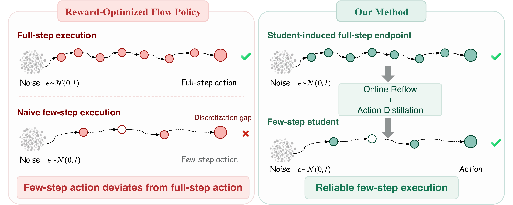
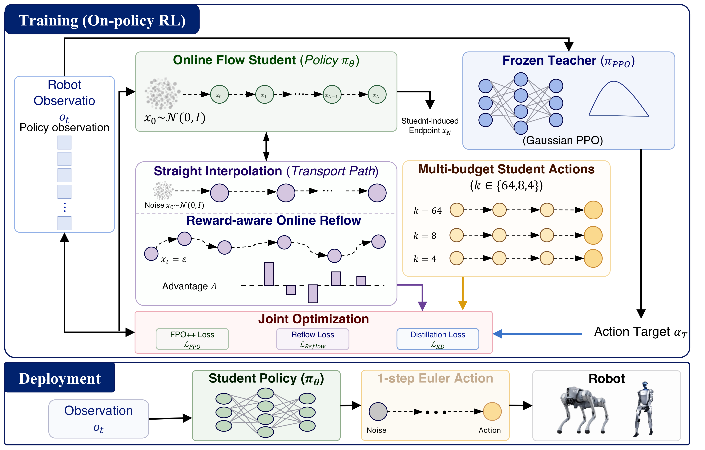
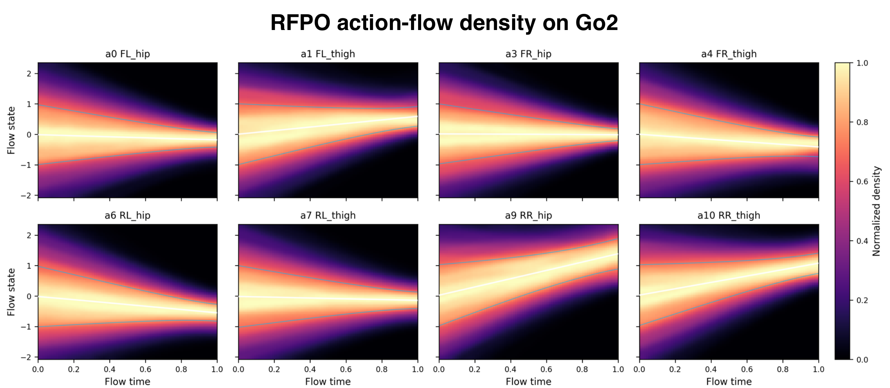

@misc{huang2026rfpo,
title = {RFPO: Rectified Flow Policy Optimization for Embodied Control},
author = {Ting Huang and Lisiyu Pan and Haoyu Wang and Zeyu Zhang and Siyuan Qian and Yanjun Li and Yandong Guo and Boxin Shi and Hao Tang},
year = {2026}
}